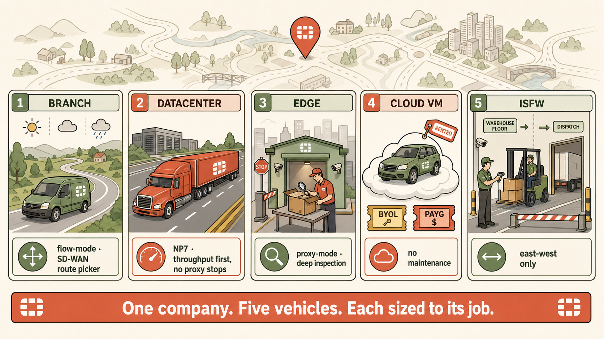

The one-paragraph refresh
A FortiGate's role in the network — not its size — determines its silicon, its inspection mode, and its SKU category. There are five canonical roles: Branch (SD-WAN across unequal links, SoC-class silicon), Datacenter (multi-NP7, flow-only, east-west), Edge (outbound user inspection, CP9-heavy for TLS decrypt, proxy-capable), Cloud VM (no silicon, vCPU-only, BYOL or PAYG, SDN Connectors), and ISFW (east-west policy inside the LAN, often transparent mode). Standardising on one SKU across all five is the reseller's fallacy — it overspends at one end and underspecs at the other. Reason workload → silicon → SKU. Always.
Why this matters on the exam
The NSE7 tests architectural thinking. Given an enterprise diagram, you must be able to label every FortiGate by role and justify silicon and features. Getting this wrong at design time creates the exact troubleshooting scenarios the exam then tests — proxy mode at the datacenter, SoC as a VPN hub, edge without CP9 capacity. Roles must be internalised, not memorised.
The role-defined firewall
| Role | Defining Job | Silicon | Inspection |
|---|---|---|---|
| Branch | SD-WAN across unequal WAN links | SoC4 / SP5 (integrated NP+CP) | Flow (typically) |
| Datacenter | Throughput at line rate, east-west | Multiple NP7 + discrete CP9 | Flow only |
| Edge | Outbound user inspection + TLS decrypt | Balanced NP7 + strong CP9 | Flow and proxy |
| Cloud VM | Any of the above, without silicon | vCPU only (no NP, no CP) | Flow (proxy expensive) |
| ISFW | East-west policy inside the LAN | Sized for internal throughput | Flow (often transparent mode) |
The one-sentence rule: A firewall's role determines its silicon; its silicon determines its inspection mode; its inspection mode determines its SKU.
The consultant's decision flow
- Where does the firewall live? Edge, datacenter, branch, cloud, or inside the LAN?
- What is the dominant traffic? Outbound user, east-west server, machine-to-machine, or inter-zone?
- What inspection is required? Flow-only, flow + proxy, or transparent bridging?
- What silicon does that inspection cost? NP7 for throughput, CP9 for TLS decrypt, SoC for integrated efficiency, vCPU for cloud.
- What SKU family maps to that silicon budget? This is finally where a datasheet enters the picture.
Never start at step 5.
Key terms
- SoC4 / SP5: System-on-Chip designs integrating NP+CP for branch/entry-level use.
- NP7: Network Processor 7 — session forwarding, NAT, IPsec crypto. Datacenter models ship multiple in parallel.
- CP9: Content Processor 9 — TLS decrypt, IPS pattern matching (via IPSA), Diffie-Hellman.
- SD-WAN: intelligent per-application steering across multiple unequal WAN links. Branch-defining feature.
- ISFW: Internal Segmentation FortiGate. East-west policy inside the LAN.
- BYOL: Bring Your Own Licence. Fixed vCPU entitlement. Portable across clouds. Long-term winner.
- PAYG: Pay As You Go. Marketplace hourly billing. Bursty/short-term winner.
- SDN Connector: polls cloud API to populate dynamic firewall address objects from tags, resource groups, VM metadata.
- Transparent mode: L2 bridge — insert an ISFW without renumbering surrounding subnets.
The traps to expect
What junior engineers get wrong
- "Standardise on one model for support and sparing." Tempting but architecturally wrong. Roles are incompatible workloads.
- "Flow mode is less security." No. Flow + NTurbo + IPS engine + CP9 (via IPSA) is full L7 inspection at line rate. The difference is timing, not depth.
- "The edge firewall protects against attackers." Partially. Its dominant real workload is inspecting outbound user traffic — where 95% of the risk actually lives.
- "A FortiGate-VM is just a smaller FortiGate." No. It has no NP7, no CP9, no crypto engine. Everything runs on vCPUs. This changes every performance calculation.
- "An ISFW is a VDOM in a separate box." Only in outcome. The reasons for physical separation are performance, failure, and administrative isolation — none of which VDOMs provide.
When a deployment feels wrong
- Trace the workload: what does this box actually do all day?
- Trace the silicon: does the hardware match that workload?
- Trace the inspection mode: is the mode compatible with the throughput target?
- Check for role confusion: is a datacenter box being asked to do edge work, or vice versa?
- Check for scale mismatch: is a SoC device being asked to hub a large topology?
- Check for cloud reality: is a physical-appliance mindset being applied to a VM?
The vehicle fleet
A national delivery company doesn't run its whole fleet as one vehicle type.
- Branch = the small van doing multi-drop rural routes. Small, agile, cost-conscious. Chooses which road to take each morning based on weather.
- Datacenter = the eighteen-wheeler on the motorway. Vast tonnage, one route, cannot afford to stop for inspection.
- Edge = the depot at the city gates. Every outgoing parcel is checked and logged. Handles fewer parcels per hour but examines each carefully.
- Cloud VM = a hired vehicle from a fleet you don't own. You choose whether to lease (BYOL) or rent per-day (PAYG). No maintenance responsibility.
- ISFW = the internal loading bay checkpoint between the warehouse floor and the dispatch area. Nothing to do with outside traffic; entirely about who moves what internally.

Five vehicles, five deployment roles — one fleet.